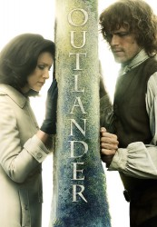

")
Alternativ: Outlander
Auszeichnungen: 1 BAFTA-Awards gewonnen
 
 IMDB-Wertung: 8.5 / 10
IMDB-Wertung: 8.5 / 10  Metascore:
Metascore: 
Die Krankenschwester Claire wird nach dem Ende des Zweiten Weltkrieges im Schottland-Urlaub durch einen magischen Steinkreis ins Jahr 1743 geschickt - sie hat eine Zeitreise aus der Mitte des 20. Jahrhunderts in die Vergangenheit gemacht. Hier wird sie von Highlandern entführt...
Jahr: 2014
Dauer: 63 Minuten
FSK:
Land: USA Studio: Starz!Tonspuren: DD5.1 - ,
Untertitel: Deutsch,
Auflösung: 720p (1280x720) Größe: 2007 MB
Genre: Drama, Sci-Fi, Liebe, TV-Serie
Regisseur: Metin Hüseyin, Anna Foerster, Brian Kelly, Mike Barker, Philip John, John Dahl, Richard Clark, Douglas Mackinnon, Daniel Petrie Jr.
Drehbuch: Carl Reiner
Soundtrack:
Darsteller:
 Caitriona Balfe als Claire Randall
Caitriona Balfe als Claire Randall Tobias Menzies als Jack Randall
Tobias Menzies als Jack Randall Graham McTavish als Dougal MacKenzie
Graham McTavish als Dougal MacKenzie Stephen Walters als Angus Mhor
Stephen Walters als Angus Mhor Gary Lewis als Colum MacKenzie
Gary Lewis als Colum MacKenzie Lotte Verbeek als Geillis Duncan
Lotte Verbeek als Geillis Duncan Stanley Weber als Comte St. Germain
Stanley Weber als Comte St. Germain James Fleet als Reverend Wakefield
James Fleet als Reverend Wakefield Dominique Pinon als Master Raymond
Dominique Pinon als Master Raymond Simon Callow als Duke of Sandringham
Simon Callow als Duke of Sandringham Annette Badland als Mrs. Fitzgibbons
Annette Badland als Mrs. Fitzgibbons Douglas Henshall als Taran MacQuarrie
Douglas Henshall als Taran MacQuarrie Steven Cree als Ian Murray
Steven Cree als Ian Murray Frances de la Tour als Mother Hildegarde
Frances de la Tour als Mother Hildegarde Douglas Russell als Lennox
Douglas Russell als Lennox Niall Greig Fulton als Monsieur Forez
Niall Greig Fulton als Monsieur Forez Julian Wadham als Lord General George Murray
Julian Wadham als Lord General George Murray Liam Carney als Old Alec
Liam Carney als Old Alec Francis Magee als Crenshaw
Francis Magee als Crenshaw Tim McInnerny als Father Bain
Tim McInnerny als Father Bain Lochlann O'Mearáin als Horrocks
Lochlann O'Mearáin als Horrocks Margaux Chatelier als Annalise de Marillac
Margaux Chatelier als Annalise de Marillac Simon Meacock als Hugh Munro
Simon Meacock als Hugh Munro John Sessions als Arthur Duncan
John Sessions als Arthur DuncanDatei: X:\HD-Serien\Outlander\S01\Outlander S01E01.mkv seit 24.09.2016
Festplatte: HD Serien(I-ST)
 Es gibt insgesamt 182 Filme in der Gruppe 'HD-Serien'
Es gibt insgesamt 182 Filme in der Gruppe 'HD-Serien'